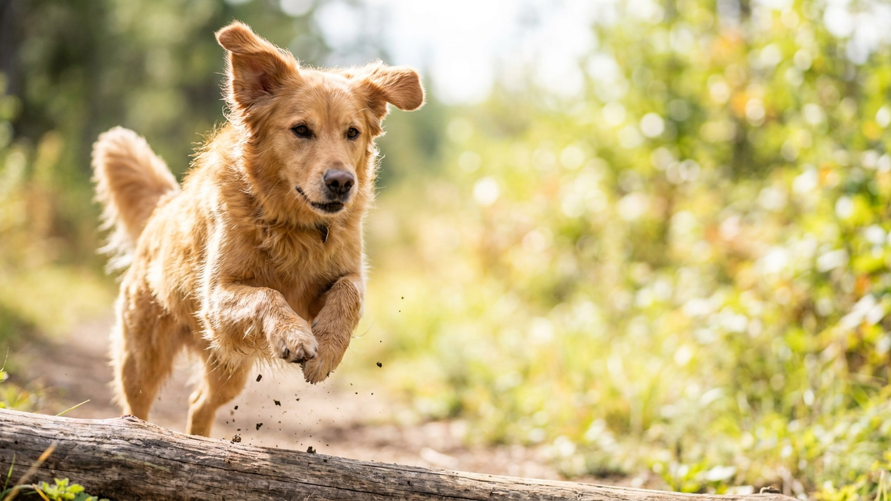

Встал с дивана — и хвост уже за тобой в коридоре. Кошка садится под дверью ванной, собака ложится у ног, пока ты готовишь. Привязанность или беспокойство? Ниже — пять причин такого поведения и понятные ориентиры: когда всё хорошо, а когда стоит что-то изменить.
🐾 Всё о вашем питомце — в одном приложении
AI-ветеринар, дневник, напоминания о прививках и уходе. Установите AnimaLife — это бесплатно, в Telegram и MAX.
Кошки и собаки — социальные виды, но по-разному. Собаки тысячи лет эволюционировали рядом с человеком: хозяин для них — часть стаи, источник еды и безопасности. Следовать за лидером — нормальная стайная стратегия. Лабрадор или бордер-колли пойдут за вами на кухню просто потому, что «стая движется».
Кошки устроены иначе — они одиночные охотники. Но домашняя кошка формирует устойчивую привязанность к хозяину, который становится «базой безопасности». Если британец или сиамец ходит за вами — это чаще всего выбор: с вами интересно и спокойно. Разница между кошкой и собакой — в степени настойчивости, не в причине.
Пять основных причин поведения «тень»:
Хорошие признаки: питомец следует за вами, но спокойно остаётся один, когда вы закрываете дверь. Кошка посидела под ванной — и ушла по своим делам. Собака провожает до прихожей и ложится ждать без воя. Приветствие радостное, но без паники.
Стоит обратить внимание, если:
Это не «избалованность» — сигнал, что питомцу некомфортно наедине с собой. У собак это называют тревогой разлуки, у кошек — гиперпривязанностью. Оба состояния хорошо корректируются, если взяться вовремя.
Обогащение среды. Чем интереснее квартира сама по себе, тем меньше хозяин — единственный источник впечатлений. Для кошки: вертикальные пространства, кормушки-головоломки, окно с видом на улицу, сменяемые игрушки. Для собаки: нюхательные коврики, Kong с едой, жевательные занятия — что-то, что держит внимание без человека.
Тренировка самостоятельности. Постепенно приучайте питомца к тому, что ваш уход — нормально. Начинайте с коротких разлук (выйти за дверь на 30 секунд, вернуться спокойно). Не устраивайте пышных прощаний и бурных встреч — это усиливает тревогу. Собаку можно научить команде «место» и оставаться там, пока вы в другой комнате.
Предсказуемый режим. Чёткое расписание кормления, прогулок и игр снижает фоновое беспокойство у обоих видов. Если питомец знает, когда будет еда и когда вы вернётесь домой, ему не нужно контролировать каждый ваш шаг.
🐾 Спросите AI-ветеринара прямо сейчас
AnimaLife — приложение, где AI-ветеринар отвечает на вопросы о кошке или собаке 24/7. Бесплатно, без записи и очередей.
🐾 Понравился разбор?
Подпишитесь на канал — каждый день разбираем по одному тревожному симптому у кошек и собак: что в пределах нормы, а когда пора к врачу. Подпишитесь, чтобы не пропустить разбор, который может спасти здоровье вашего питомца.
Если меры не дают результата за 3–4 недели или поведение резко изменилось (раньше питомец спокойно оставался один — теперь нет), стоит проконсультироваться с ветеринаром или зоопсихологом. Резкое усиление слежки у взрослого питомца иногда связано с физическим дискомфортом. Специалист поможет отделить поведенческую причину от физической.
Материал носит информационный характер и не заменяет очную консультацию ветеринара.